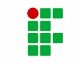

<ion-header [translucent]="true">
  <ion-toolbar>
    <ion-title>
      Blank
    </ion-title>
  </ion-toolbar>
</ion-header>

<ion-content [fullscreen]="true">
  <ion-header collapse="condense">
    <ion-toolbar>
      <ion-title size="large">TELA DE HOME PARA VERIFICAÇÃO DA ROTA</ion-title>
      <!--  -->
    </ion-toolbar>
  </ion-header>

  <div id="container">
    <strong>Ready to create an app?</strong>
    <p>Start with Ionic <a target="_blank" rel="noopener noreferrer" href="https://ionicframework.com/docs/components">UI Components</a></p>
  </div>
</ion-content>
